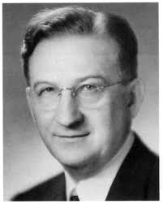

1841
Catherine Beecher writes Treatise on Domestic Economy
1842
 Ellen Swallow Richards born
Ellen Swallow Richards born1862
 Morrill Act sets up land grant universities
Morrill Act sets up land grant universities1868
 Ellen is accepted into Vassar College. 1870 accepted into MIT
Ellen is accepted into Vassar College. 1870 accepted into MIT1873
Ellen graduates from MIT
1890
 HBCU gives more opportunity to minorities
HBCU gives more opportunity to minorities1894
 Ellen Richards starts a lunch program in Boston
Ellen Richards starts a lunch program in Boston1899
Ellen Richards leads a group at the first Lake Placid Conferences
1901
Education beyond 8th grade is a reality
1901
 Vocation education now included in secondary education
Vocation education now included in secondary education1909
1st Girl's Tomato Club is organized by Marie Cromer
1909
 American Home Economics Association is established
American Home Economics Association is established1911
Ellen Richards dies
1912
 South Carolina gets home demonstration agents
South Carolina gets home demonstration agents1914
 Smith-Lever Act Cooperative Extension Service gives rural towns agricultural and home economics
Smith-Lever Act Cooperative Extension Service gives rural towns agricultural and home economics1917
 Smith-Hughes Act splits vocational training from high school
Smith-Hughes Act splits vocational training from high school1917-1919
 WWI impacts fresh fruits and vegetables
WWI impacts fresh fruits and vegetables1918
 Home economics instruction for boys and girls goals are set with the AHEA
Home economics instruction for boys and girls goals are set with the AHEA1920
 Home Economics added to Land-Grant Colleges. Parenting classes encouraged for both men and women
Home Economics added to Land-Grant Colleges. Parenting classes encouraged for both men and women1921
Women's Suffrage
1925
 Childcare is a key element to home economics
Childcare is a key element to home economics1926
 Home economists create nutritional recipes for corporations to be taught to school home economist teachers
Home economists create nutritional recipes for corporations to be taught to school home economist teachers1931
 The public sees home economists as experts in human nutrition
The public sees home economists as experts in human nutrition1936
George Deen Act provides federal aid for vocational training
1941
 President Roosevelt's First Nutrition Congress addes Agnes Faye Morgan
President Roosevelt's First Nutrition Congress addes Agnes Faye Morgan1943
Bureau of Human Nutrition and Home Economics is the new name of the former USDA Bureau of Home Economics
1960's
 Femenists see Home Economics as restrictive. Racial integration takes place and specialized programs are more available
Femenists see Home Economics as restrictive. Racial integration takes place and specialized programs are more available1961
Home Economics accredidation in undergraduate programs begins
1962
 Florence Low wants to eliminate racial tensions within AHEA
Florence Low wants to eliminate racial tensions within AHEA1963
Helping people become self-reliant outside the home, Vocational Education Act is passed into law
1968
 Handicapped and disadvantaged people are now included in the Vocational Education Act
Handicapped and disadvantaged people are now included in the Vocational Education Act1973
Lake Placid Conference held. This 11th meeting is focused on aligning members
1976
 Males become focus of Home Economists with the Vocational Ed Act
Males become focus of Home Economists with the Vocational Ed Act1989
 Project 2000 is launched to address diversity in the AHEA
Project 2000 is launched to address diversity in the AHEA1991
 "Rethinking Women & Home Economics in the 20th Century" conference held
"Rethinking Women & Home Economics in the 20th Century" conference held1993
 Scottsdale AZ meeting recommends removing Home Economics from association name
Scottsdale AZ meeting recommends removing Home Economics from association name1994
Name of the AHEA was changed to the American Association of Family and Consumer Science (AAFCS)
1998
FCS membership and public school programs see decline in participation
2008-2009
 Centennial celebration of AAFCS held nationally
Centennial celebration of AAFCS held nationally2019
 Adam Frank takes FCS101 with Sis Beckstead, changes his perspective
Adam Frank takes FCS101 with Sis Beckstead, changes his perspective